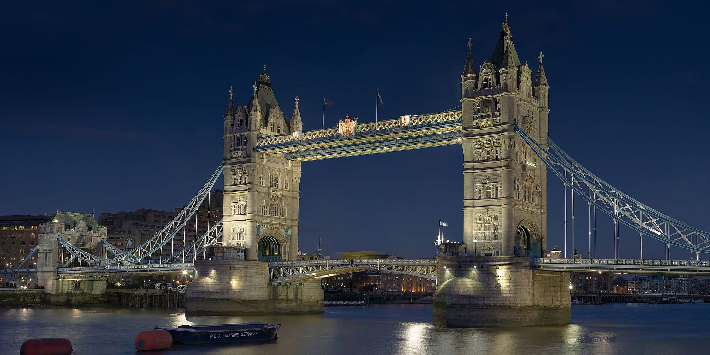
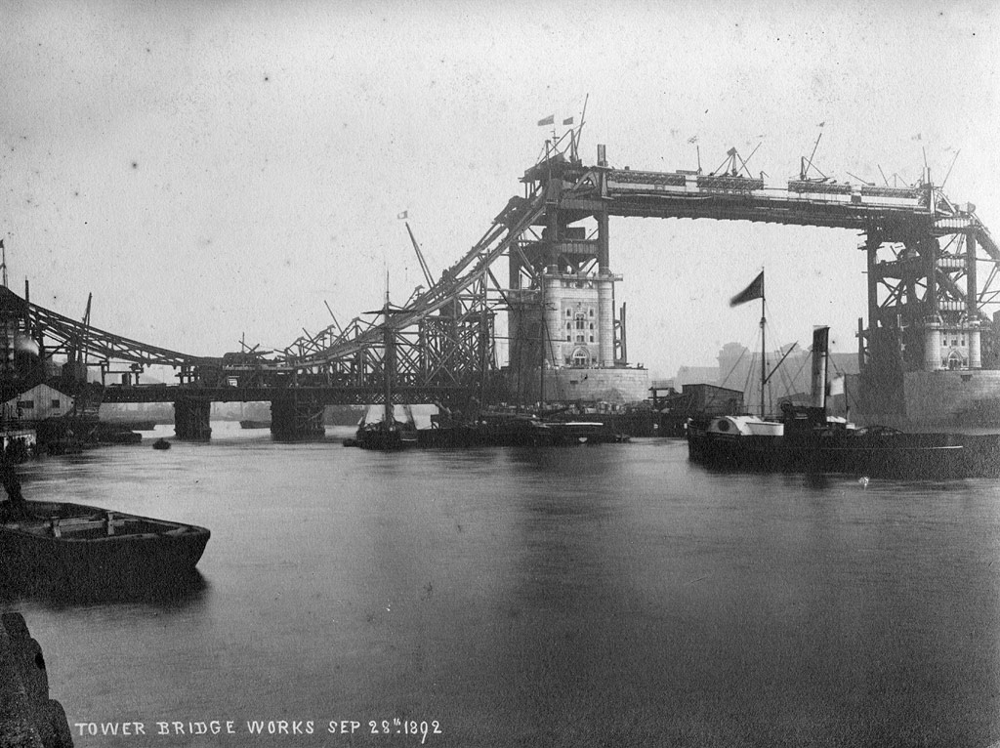

Tower Bridge
Tower Bridge este un pod peste Tamisa situat în Londra. Podul a fost construit între anii 1888 - 1894 și leagă partea de sud cu nordul orașului. Lungimea totală a podului este de 244 m, înălțimea pilierilor atinge 65 m. Tower Bridge a fost proiectat în stilul neogotic de Horace Jones. Pe malul de nord al Tamisei se află Turnul Londrei (Tower of London) și Saint Katharine Docks. Pe malul de sud se găsește City Hall. Frecvent turiștii confundă Tower Bridge cu Podul Londrei (London Bridge), care este podul următor pe direcția sensului de curgere a Tamisei. O legendă urbană spune că în 1968, Robert McCulloch, cel care a cumpărat London Bridge și l-a reconstruit în Lake Havasu, a crezut că a cumpărat Tower Bridge. Acest zvon a fost infirmat de McCulloch și de Ivan Luckin, cel care a vândut podul.
Tower Bridge este în același timp un pod mobil și un pod suspendat. Podul are două turnuri care sunt legate între ele la nivelul superior prin pasarele, care au rolul de a se opune forțelor orizontale exercitate de secțiunile suspendate ale podului de pe părțile dinspre uscat ale turnurilor. Componentele verticale ale forțelor din secțiunile suspendate și reacțiile verticale ale celor două pasarele sunt suportate de cele două turnuri robuste. Pivoții pentru basculare și mașinile necesare deschiderii podului sunt adăpostite la baza fiecărui turn. Culoarea actuală a podului datează din 1977 când a fost vopsit în roșu, alb și albastru în onoarea Reginei Elisabeta a II-a, cu prilejul celei de-a 25-a aniversări a urcării pe tron. Culoarea originală a fost maro ciocolatiu.
In a doua jumătate a secolului al XIX-lea, dezvoltarea comerțului în estul Londrei a dus la o cerere de construire a unui nou pod în aval de Podul Londrei. Un pod tradițional, fix, nu putea fi construit pentru că ar fi împiedicat accesul la facilitățile portuare în zona Pool of London, între Podul Londrei și Turnul Londrei. În 1876 a fost format un comitet special, condus de Sir Albert Joseph Altman, pentru a găsi o soluție cu privire la problema traversării râului. Comisia a organizat un concurs de proiecte. Peste 50 de planuri au fost trimise, inclusiv unul creat de un inginer, Sir Joseph Bazalgette. Modul de evaluare a proiectelor a fost controversat și numai în 1884, un proiect trimis de Horace Jones, arhitectul orașului (care era și unul din membrii juriului), a fost aprobat.
In a doua jumătate a secolului al XIX-lea, dezvoltarea comerțului în estul Londrei a dus la o cerere de construire a unui nou pod în aval de Podul Londrei. Un pod tradițional, fix, nu putea fi construit pentru că ar fi împiedicat accesul la facilitățile portuare în zona Pool of London, între Podul Londrei și Turnul Londrei. În 1876 a fost format un comitet special, condus de Sir Albert Joseph Altman, pentru a găsi o soluție cu privire la problema traversării râului. Comisia a organizat un concurs de proiecte. Peste 50 de planuri au fost trimise, inclusiv unul creat de un inginer, Sir Joseph Bazalgette. Modul de evaluare a proiectelor a fost controversat și numai în 1884, un proiect trimis de Horace Jones, arhitectul orașului (care era și unul din membrii juriului), a fost aprobat.